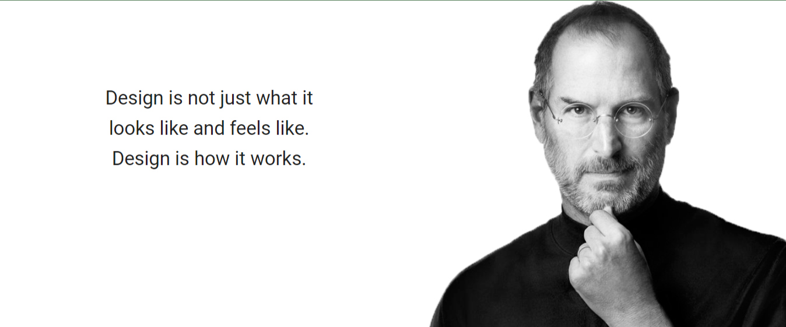

Steve Jobs
1955-2011
Steve Jobs
1955-2011

Biography
Steven paul "Steve" Jobs was an American information
technology entrepreneur and inventor .He was the
cofounder ,chairman,and CEO of Apple Inc, CEO and
largest shareholder of Pixar Animation Studios;and
founder, chairman,and CEO of NeXT Inc.Jobs is widly
recognized as a pioneer of the microcomputer relovution
of the 1970's,along with Apple co-founder Steve Wozniak.
"Creative entrepreneur whose passion for perfection and
ferocious drive revolutionized six industreis:personal
computers,animated movies,music,phones, tablet
computing and digital publishing